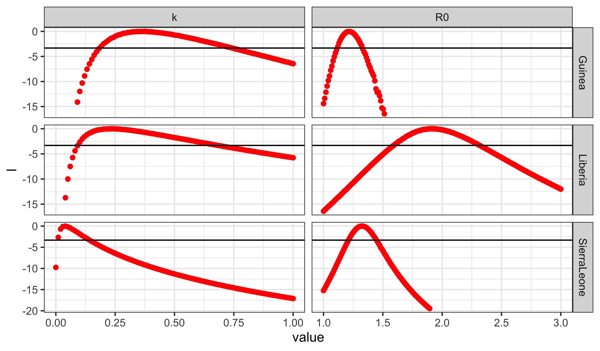
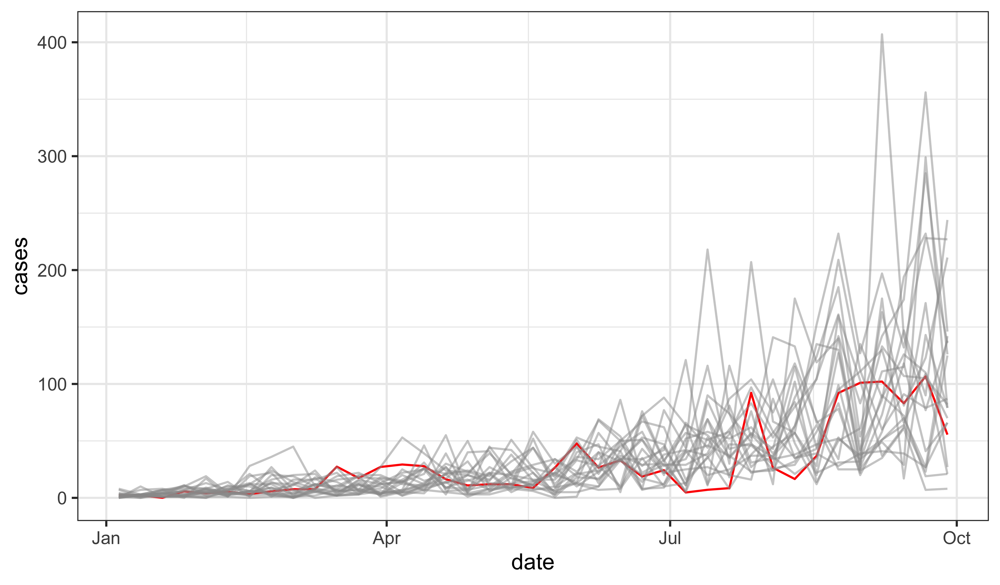
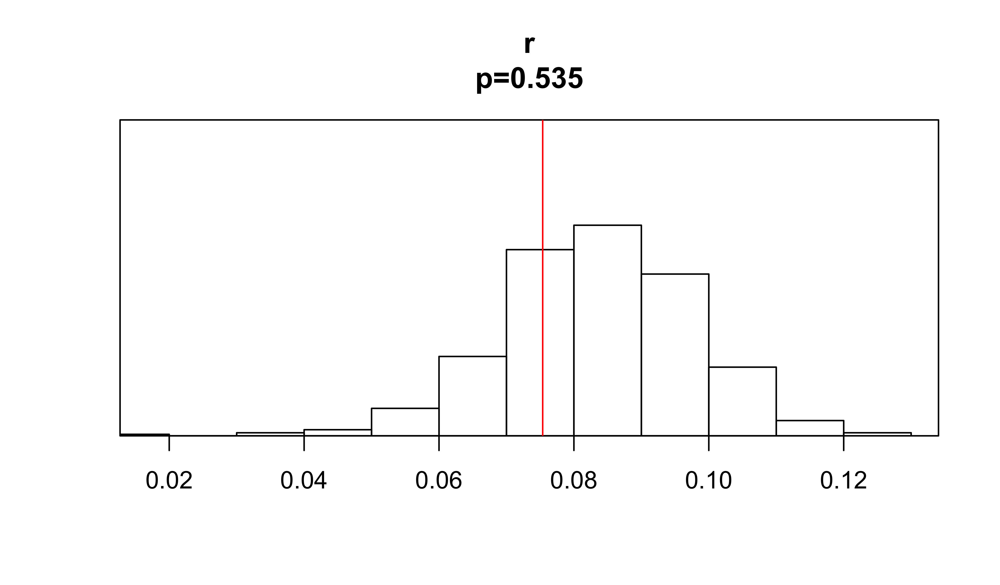
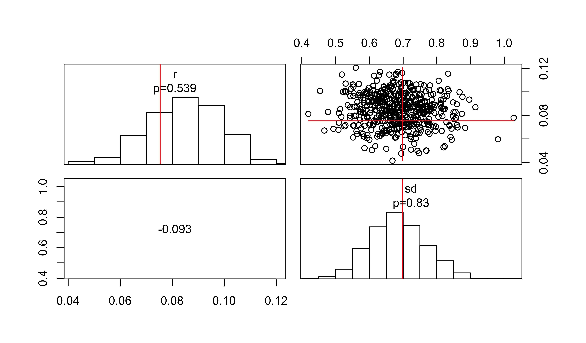
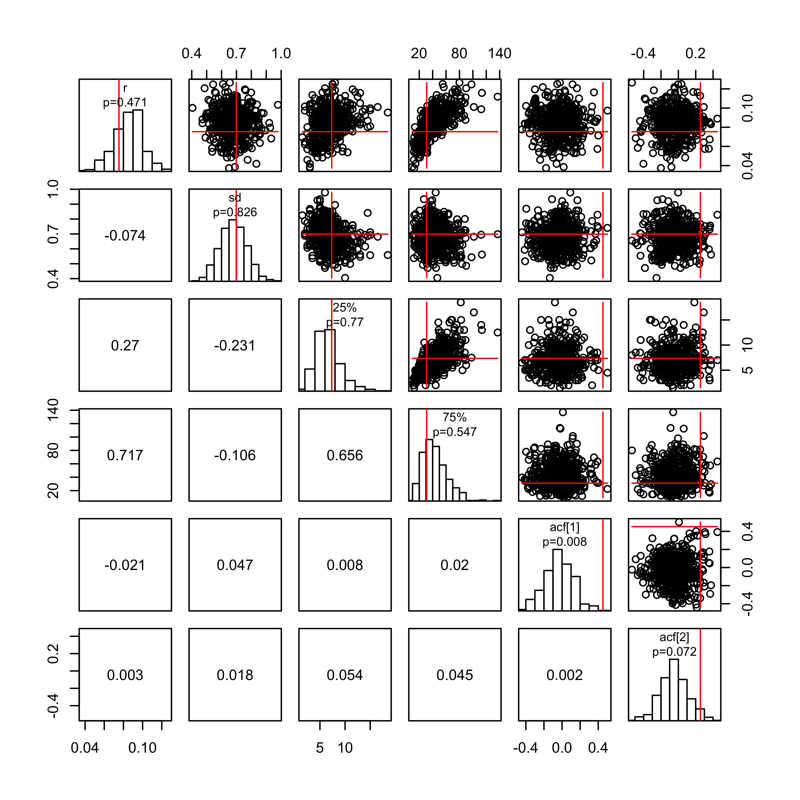
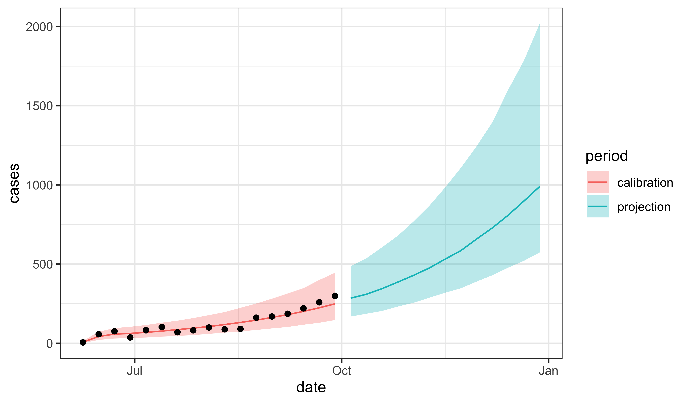

Lesson 7: Case study: ebola
Introduction
Objectives
To explore the use of POMP models in the context of an outbreak of an emerging infectious disease.To demonstrate the use of diagnostic probes for model criticism.To illustrate some forecasting methods based on POMP models.To provide an example that can be modified to apply similar approaches to other outbreaks of emerging infectious diseases.
This lesson follows King et al. (2015), all codes for which are available on datadryad.org.
2014 West Africa EVD outbreak
An emerging infectious disease outbreak
Let’s situate ourselves at the beginning of October 2014. The WHO situation report contained data on the number of cases in each of Guinea, Sierra Leone, and Liberia. Key questions included:
How fast will the outbreak unfold?How large will it ultimately prove?What interventions will be most effective?
As is to be expected in the case of a fast-moving outbreak of a novel pathogen in an underdeveloped country, the answers to these questions were sought in a context far from ideal:
- Case ascertainment is difficult and the case definition itself may be evolving.
- Surveillance effort is changing on the same timescale as the outbreak itself.
- The public health and behavioral response to the outbreak is rapidly changing.
Best practices
- The King et al. (2015) paper focused critical attention on the economical and therefore common practice of fitting deterministic transmission models to cumulative incidence data.
Specifically, @King2015 showed how this practice easily leads to overconfident prediction that, worryingly, can mask their own presence.The paper recommended the use of POMP models, for several reasons:
-
Such models can accommodate a wide range of hypothetical forms.
-
They can be readily fit to incidence data, especially during the exponential growth phase of an outbreak.
-
Stochastic models afford a more explicit treatment of uncertainty.
-
POMP models come with a number of diagnostic approaches built-in, which can be used to assess model misspecification.Data and model
Data
Situation-report data
The data and pomp codes used to represent the transmission models are presented in a supplement.
The data we focus on here are from the WHO Situation Report of 1 October 2014. Supplementing these data are population estimates for the three countries.
Model
SEIR model with gamma-distributed latent period
- Many of the early modeling efforts used variants on the simple SEIR model.
Here, we'll focus on a variant that attempts a more careful description of the duration of the latent period.Specifically, this model assumes that the amount of time an infection remains latent is
\begin{equation*}
\mathrm{LP} \sim \dist{Gamma}{m,\frac{1}{m\,\alpha}},
\end{equation*}
where $m$ is an integer.This means that the latent period has expectation $1/\alpha$ and variance $1/(m\,\alpha)$. In this document, we'll fix $m=3$.We implement Gamma distributions using the so-called *linear chain trick*.
The observations are modeled as a negative binomial process conditional on the number of infections. That is, if \(C_t\) are the reported cases at week \(t\) and \(H_t\) is the true incidence, then we postulate that \(C_t | H_t\) is negative binomial with
\[\begin{equation*} \expect{C_t|H_t} = \rho\,H_t\] and \[\var{C_t|H_t} = \rho\,H_t\,(1+k\,\rho\,H_t). \end{equation*}\]
The negative binomial process allows for overdispersion in the counts. This overdispersion is controlled by parameter \(k\).
Parameter estimates
Parameter estimates
- King et al. (2015) estimated parameters for this model for each country.
A Latin hypercube design was used to initiate a large number of iterated filtering runs.Profile likelihoods were computed for each country against the parameters $k$ (the measurement model overdispersion) and $R_0$ (the basic reproductive ratio).Full details are given [on the datadryad.org site](https://dx.doi.org/10.5061/dryad.r5f30).Codes for this document are [available here](./codes.R). The results of these calculations are loaded and displayed in the following.
The following are plots of the profile likelihoods. The horizontal line represents the critical value of the likelihood ratio test for $p=0.01$.

Model Criticism
Diagnostics or Model Criticism
Parameter estimation is the process of finding the parameters that are “best”, in some sense, for a given model, from among the set of those that make sense for that model.
Model selection, likewise, aims at identifying the “best” model, in some sense, from among a set of candidates.
One can do both of these things more or less well, but no matter how carefully they are done, the best of a bad set of models is still bad.
Let’s investigate the model here, at its maximum-likelihood parameters, to see if we can identify problems.
The guiding principle in this is that, if the model is “good”, then the data are a plausible realization of that model.
Therefore, we can compare the data directly against model simulations.
Moreover, we can quantify the agreement between simulations and data in any way we like.
Any statistic, or set of statistics, that can be applied to the data can also be applied to simulations.
Shortcomings of the model should manifest themselves as discrepancies between the model-predicted distribution of such statistics and their value on the data.
pomp provides tools to facilitate this process.
Specifically, the
probefunction applies a set of user-specified summary statistics or probes, to the model and the data, and quantifies the degree of disagreement in several ways.Let's see how this is done using the model for the Guinean outbreak.
Simulation for diagnosis
Model simulations
From our profile-likelihood calculations, we extract the MLE:
profs |>
filter(country=="Guinea") |>
filter(loglik==max(loglik)) |>
select(-loglik,-loglik.se,-country,-profile) -> coef(gin)Here, profs contains the profile-likelihood calculations displayed previously and gin is a pomp object containing the model and data for Guinea.
The following generates and plots some simulations on the same axes as the data.
gin |>
simulate(nsim=20,format="data.frame",include.data=TRUE) |>
mutate(
date=min(dat$date)+7*(week-1),
is.data=ifelse(.id=="data","yes","no")
) |>
ggplot(aes(x=date,y=cases,group=.id,color=is.data,alpha=is.data))+
geom_line()+
guides(color="none",alpha="none")+
scale_color_manual(values=c(no=gray(0.6),yes="red"))+
scale_alpha_manual(values=c(no=0.5,yes=1))
Diagnostic probes
Diagnostic probes
Does the data look like it could have come from the model?
- The simulations appear to be growing a bit more quickly than the data.
Let’s try to quantify this.
- First, we’ll write a function that estimates the exponential growth rate by linear regression.
- Then, we’ll apply it to the data and to 500 simulations.
In the following,
ginis a pomp object containing the model and the data from the Guinea outbreak.
growth.rate <- function (y) {
cases <- y["cases",]
fit <- lm(log1p(cases)~seq_along(cases))
unname(coef(fit)[2])
}
gin |>
probe(probes=list(r=growth.rate),nsim=500) |>
plot()
- Do these results bear out our suspicion that the model and data differ in terms of growth rate?
- The simulations also appear to be more highly variable around the trend than do the data.
growth.rate.plus <- function (y) {
cases <- y["cases",]
fit <- lm(log1p(cases)~seq_along(cases))
c(r=unname(coef(fit)[2]),sd=sd(residuals(fit)))
}
gin |>
probe(probes=list(growth.rate.plus),nsim=500) |>
plot()
Do we see evidence for lack of fit of model to data?
Let’s also look more carefully at the distribution of values about the trend using the 1st and 3rd quartiles.
Also, it looks like the data are less jagged than the simulations. We can quantify this using the autocorrelation function (ACF).
log1p.detrend <- function (y) {
cases <- y["cases",]
fit <- lm(log1p(cases)~seq_along(cases))
y["cases",] <- as.numeric(residuals(fit))
y
}
gin |>
probe(nsim=500,
probes=list(
growth.rate.plus,
probe_quantile(var="cases",prob=c(0.25,0.75)),
probe_acf(var="cases",lags=c(1,2),type="correlation",
transform=log1p.detrend))) |>
plot()
Exercise
The Sierra Leone outbreak
Apply probes to investigate the extent to which the SEIR model above is an adequate description of the data from the Sierra Leone outbreak. Have a look at the probes provided with pomp: ?basic.probes. Try also to come up with some informative probes of your own. Discuss the implications of your findings.
Forecasting using POMP models
Sources of uncertainty
Forecasting and forecasting uncertainty
- To this point in the course, we’ve focused on using POMP models to answer scientific questions, i.e., to compare alternative hypothetical explanations for the data in hand.
Of course, we can also use them to make forecasts.A set of key issues surrounds quantifying the forecast uncertainty.This arises from four sources:
1.
measurement error
2.
process noise
3.
parametric uncertainty
4.
structural uncertainty- Here, we’ll explore how we can account for the first three of these in making forecasts for the Sierra Leone outbreak.
Forecasting Ebola: an empirical Bayes approach
Parameter uncertainty
We take an empirical Bayes approach.
First, we set up a collection of parameter vectors in a neighborhood of the maximum likelihood estimate containing the region of high likelihood.
profs |>
filter(country=="SierraLeone") |>
select(-country,-profile,-loglik.se) |>
filter(loglik>max(loglik)-0.5*qchisq(df=1,p=0.99)) |>
gather(parameter,value) |>
group_by(parameter) |>
summarize(min=min(value),max=max(value)) |>
ungroup() |>
filter(parameter!="loglik") |>
column_to_rownames("parameter") |>
as.matrix() -> rangessobol_design(
lower=ranges[,"min"],
upper=ranges[,"max"],
nseq=20
) -> params
plot(params)Process noise and measurement error
Next, we carry out a particle filter at each parameter vector, which gives us estimates of both the likelihood and the filter distribution at that parameter value.
M1 <- ebolaModel("SierraLeone")
M1 |> pfilter(params=p,Np=2000,save.states=TRUE) -> pfWe extract the state variables at the end of the data for use as initial conditions for the forecasts.
pf |>
saved_states() |> ## latent state for each particle
tail(1) |> ## last timepoint only
melt() |> ## reshape and rename the state variables
pivot_wider() |>
group_by(.id) |>
summarize(S_0=S, E_0=E1+E2+E3, I_0=I, R_0=R) |>
pivot_longer(-.id) |>
spread(.id,value) |>
column_to_rownames("name") |>
as.matrix() -> xThe final states are now stored in x.
We simulate forward from the initial condition, up to the desired forecast horizon, to give a forecast corresponding to the selected parameter vector. To do this, we first set up a matrix of parameters:
pp <- parmat(unlist(p),ncol(x))Then, we generate simulations over the “calibration period” (i.e., the time interval over which we have data). We record the likelihood of the data given the parameter vector:
M1 |>
simulate(params=pp,format="data.frame") |>
select(.id,week,cases) |>
mutate(
period="calibration",
loglik=logLik(pf)
) -> calibNow, we create a new pomp object for the forecasting.
M2 <- M1
time(M2) <- max(time(M1))+seq_len(horizon)
timezero(M2) <- max(time(M1))We set the initial conditions to the ones determined above and perform forecast simulations.
pp[rownames(x),] <- x
M2 |>
simulate(params=pp,format="data.frame") |>
select(.id,week,cases) |>
mutate(
period="projection",
loglik=logLik(pf)
) -> projWe combine the calibration and projection simulations into a single data frame.
bind_rows(calib,proj) -> simsWe repeat this procedure for each parameter vector, binding the results into a single data frame. See this lesson’s R script for details.
We give these prediction distributions weights proportional to the estimated likelihoods of the parameter vectors.
sims |>
mutate(weight=exp(loglik-mean(loglik))) |>
arrange(week,.id) -> simsWe verify that our effective sample size is large.
sims |>
filter(week==max(week)) |>
summarize(ess=sum(weight)^2/sum(weight^2)) ess
10485.34Finally, we compute quantiles of the forecast incidence.
sims |>
group_by(week,period) |>
reframe(
p=c(0.025,0.5,0.975),
value=wquant(cases,weights=weight,probs=p),
name=c("lower","median","upper")
) |>
select(-p) |>
pivot_wider() |>
ungroup() |>
mutate(date=min(dat$date)+7*(week-1)) -> simq
Exercise
Decomposing the uncertainty
As we have discussed, the uncertainty shown in the forecasts above has three sources: parameter uncertainty, process noise, and measurement error. Show how you can break the total uncertainty into these three components. Produce plots similar to that above showing each of the components.
References
References
King, Aaron A., Matthieu Domenech de Cellès, Felicia M. G. Magpantay, and Pejman Rohani. 2015. “Avoidable Errors in the Modelling of Outbreaks of Emerging Pathogens, with Special Reference to Ebola.” Proc R Soc Lond B 282 (1806): 20150347. https://doi.org/10.1098/rspb.2015.0347.
License, acknowledgments, and links
This lesson is prepared for the Simulation-based Inference for Epidemiological Dynamics module at the Summer Institute in Statistics and Modeling in Infectious Diseases, SISMID.
The materials build on previous versions of this course and related courses.
Licensed under the Creative Commons Attribution-NonCommercial license. Please share and remix non-commercially, mentioning its origin.
Produced with
Rversion 4.4.0 and pomp version 5.9.Compiled on 2024-06-17.